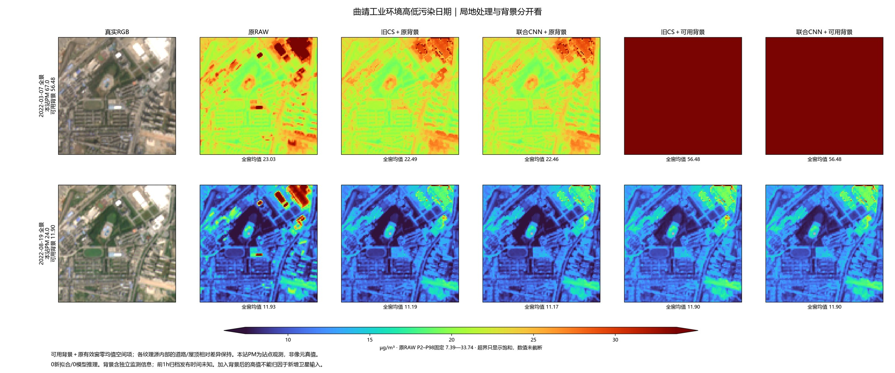
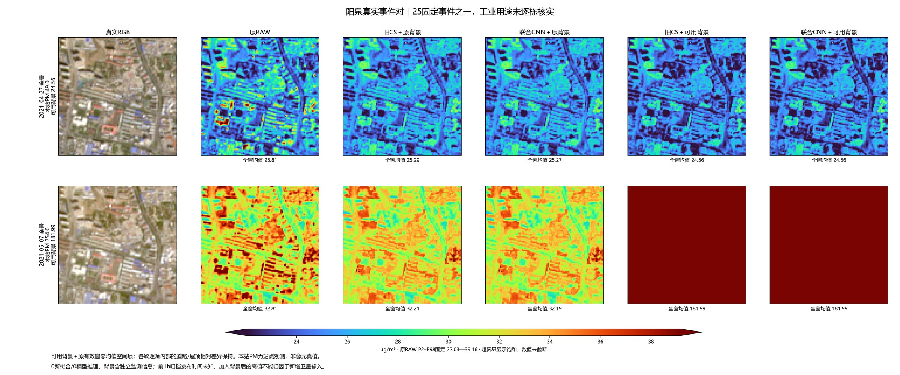
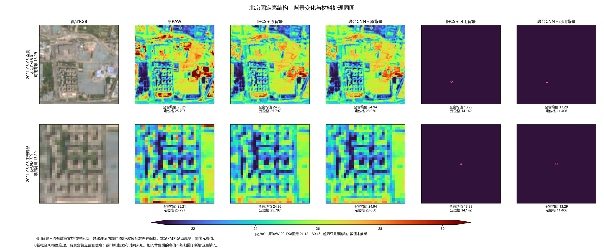
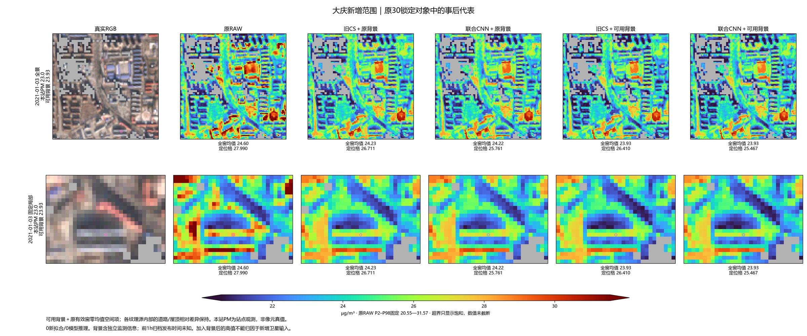
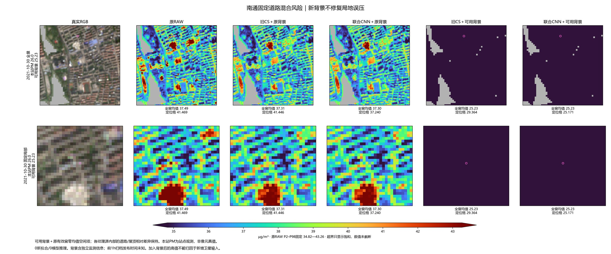
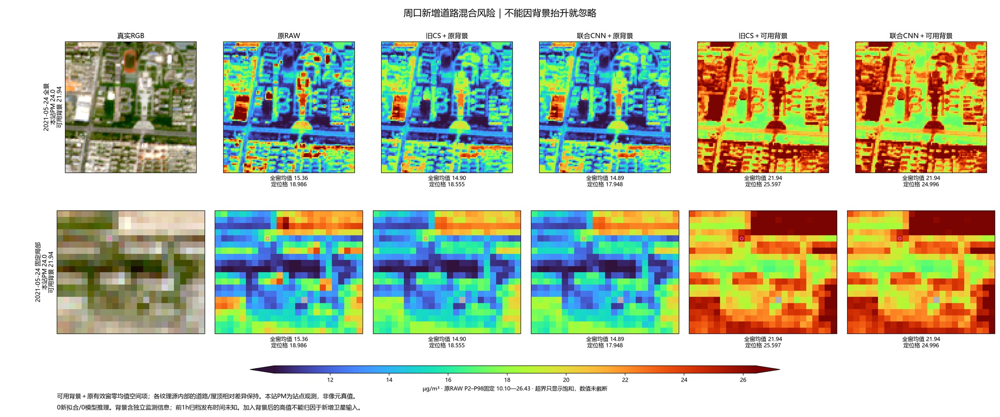

149原场＋50事件 · 0新fit / 0模型推理 · 7北京A/B无精确背景匹配明确列缺
固定公式：新背景＋（原联合CNN场−原有效窗均值）。背景和纹理的来源都保留作对照；全窗均值相同，不代表两种纹理的PM精度相同。原图里道路被压低的问题仍会保留。
固定组合规则 · 结果与局限 · 7场缺口 · 全部日期实际值 · 25事件 · 199场索引
| method | group | n | RMSE | MAE |
|---|---|---|---|---|
| CS_CONSISTENT_STATE | MATCHED149 | 149 | 19.6395 | 12.3868 |
| CS_NATIVE_CONTEXT_UNION | MATCHED149 | 149 | 19.6426 | 12.3893 |
| EVENT_AVAILABLE_REF_CS | MATCHED149 | 149 | 10.8175 | 7.0859 |
| EVENT_AVAILABLE_REF_UNION | MATCHED149 | 149 | 10.8175 | 7.0859 |
| RAW | MATCHED149 | 149 | 19.5432 | 12.3413 |
| method | n | event_RMSE | event_MAE | positive_delta_pairs |
|---|---|---|---|---|
| CS_CONSISTENT_STATE | 25 | 77.4120 | 50.7581 | 23 |
| CS_NATIVE_CONTEXT_UNION | 25 | 77.4124 | 50.7575 | 23 |
| EVENT_AVAILABLE_REF_CS | 25 | 32.8451 | 24.6658 | 25 |
| EVENT_AVAILABLE_REF_UNION | 25 | 32.8450 | 24.6657 | 25 |
| RAW | 25 | 77.4045 | 50.7827 | 23 |
所有差异来自已有缓存组合。背景含地面监测信息，不能称纯卫星反演改进；高污染日可能超出旧RAW色限而显示饱和，数组没有截断。





